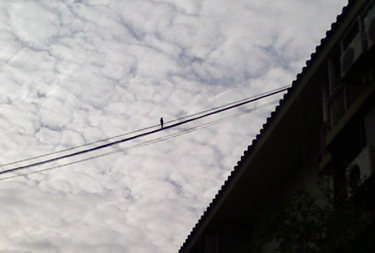

[다리는 안보인다]
중학교 때인가.
전기와 전류에 대해 배우면서 선생님에게 이런 얘길 들었다.
'전선 위의 참새가 감전되지 않는 이유는 새들이 한 다리로 앉아있기 때문이다.'
뭔가 그럴싸 하긴 한데. 어린 나로써도 의아한 부분이 많았다.
물론. 이 말은 사실이 아니다.
전선 위의 새는 두 발로 전선을 붙들고 있다. (아쉽게도 사진에선 보이지 않는다.)
나는 새가 감전되지 않는 이유를 말하려는게 아니다.
선생님은 왜 아이들에게 그렇게 설명해주셨을까?
그것이 궁금하다.